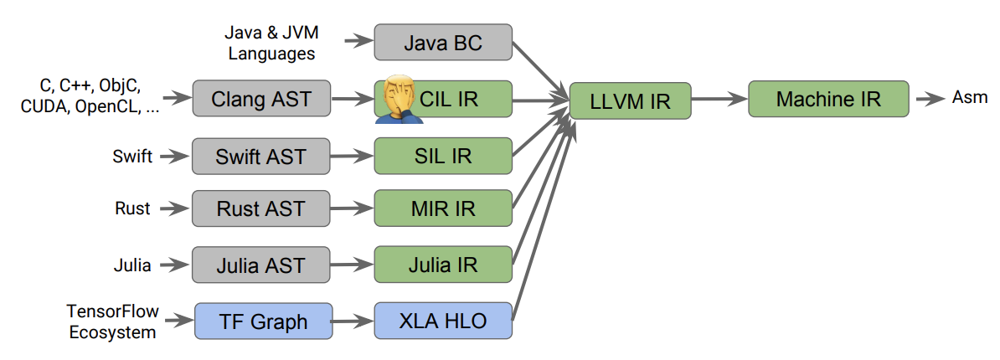

Open Source Compilers
and
Virtual Machines
An engineering overview
Alan Li
Synopsis
- Development of OS compilers
- Future of compiler development
- OS virtual machines
- Future of virtual machines
Compilers: After 50 years still going strong
Compilers are complex software artifacts.Active Open Source compilers
Measurement of compiler performance
- Execution speed
- Code size
- Power efficiency
- Cost of execution
- Memory consumption
Case study: Choosing LLVM
- UIUC License: permissive free at no charge
- Modular design
- Industrial adoption
- Excellent software engineering practice
- Large ecosystem
- Commercial opportunities
Toolchain development opportunities in China

Commercial LLVM (albeit a small niche)
- History: compilers used to be commercial
- Then GCC came
- GCC destroyed most compiler companies
Commercial LLVM (albeit a small niche)
LLVM makes commercial compiler companies possibly again
- 'BSD' licensing permits proprietary uses
- Competitve compiler infrastructure
- Modular design works for multiple purposes
- Easy to create specialty compilers
- Large ecosystem and friendly community
Toolchain development opportunities in China
A market investigation and analysis- Only a few companies develop toolchains
- Demands mostly from chip makers in China
- # of companies rising steadily
- Deep learning chips emerging
- migrating from knock-off to proprietary
- Slow industrial adoption
LLVM IR: Universal Intermediate Representation
- IR: Intermediate Representation
- multiple sources
- multiple target
 Graph Source
Graph Source
LLVM IR: at the core of LLVM ecosystem
- Designed to be a lower, universal IR for higher languages
- LLVM Modules are built around LLVM IR
- *NOT* a silver bullet
LLVM IR: The most common low-level IR
 Source: "MLIR Primer: A Compiler Infrastructure for the End of Moore’s Law"- Most widely used in machine code generation
- C-lang level abstraction
Future topics of compiler engineering
What we talk about when we talk about the end of Moore's Law?- Heterogeneous Computing
- GPGPU, BigData engines
- Machine Learning frameworks
- TensorFlow, TVM, etc...
- Blockchain execution engine
- Verified smart contract compiing
- Execution cost optimization
- Privacy-preserving computing
MLIR: evolution of LLVM IR
- "ML" is multi-purpose: multi-level, machine learning
- Built for the Machine Learning community and beyond
- An LLVM IR dialect for codegen
MLIR: a unified infrasttructure
- MLIR does not support low level code generation
- Works best together with LLVM
- type system and operations are dialect defined
- easier polyhedral optimizations
- already works for all TensorFlow graphs
Virtual Machines
VMs are everywhere- Language runtimes:
- Java, Python, JavaScript
- VM Components:
- Library, Interpreter, Garbage Collector, JIT GC and JIT can be extremely coplicated
- Other types of VMs
- System-level VMs, Binary-translators, emulators...
VM: serious engineering effort
A personal experience- High-performance VMs takes years to mature
- JIT and GC exponentially complicate the engineering design
- Some performance gain comes from software-hardware codesign
- Sophisticated VMs is hard to maintain
方舟编译器(Ark) -- A case study
- A static Java compiler for Android Apps
- Compiles Java bytecode into Binary
- Based on Huawei's Maple
- What do outsiders know so far?
- Eliminate(alleviate) JNI overhead
- Still needs runtime library
- Compatible with all(most?) Android distros
Can it live up with expectations?
- Should work for lightweight smartphone applications
- Eliminates JIT's warm-up time, and resources
- Weaker optimization than JIT
- ART and JIT works on per-micro-architecture basis
- ART and JIT improve over time, static code cannot
- Cannot fully apply some JIT-specific optimizations
Case study: JVM improvements over the years
Source: Beyond Java (2013)Case study: WebAssembly
WASM is aiming to change the web- a build target, not a language
- Distributed in precompiled format
- avoids parsing and most optimizations
- Host API makes it even faster
- Streaming compiling made possible